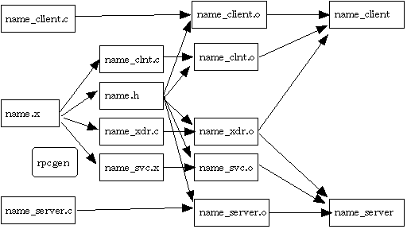

Computer Networks
Prev |
Next |
Index
Remote Procedure Call (Contd...)
We now look at the different ways of writing RPC programs. There are three levels at which RPC programs can be written:
- On one extreme we can use some standard applications or programs provided by sun-RPC. For example, one can use the library function int rnusers (char *machinename ) for finding number of users logged onto a remote system.
- On the other hand we can use RPC run�time library : This has the maximum flexibility and efficiency. It has various functions like opening a connection, connecting to a port-mapper and other low level functions. Using this we can write our own stubs. This is however relatively difficult to use.
- The best approach is to use RPCgen : RPCgen stands for RPC generator. It generates client and server stubs. There are several details that cannot be easily controlled (for example, the number of retries in case of timeout). RPCgen takes as input a specification file which has a list of the procedures and arguments. It creates the client stub and server stub.
Writing the Configuration File
If we use RPCgen, then our work is essentially reduced to writing
a specification file. This file has the procedure names, argument types,
return types etc. Here we show a simple RPC specification file ( spec.x ) for
printing a message on some other machine :
program MESSAGEPROG {
version MESSAGEVERS {
int PRINTMESSAGE ( string ) = 1;
} = 1;
} = 99;
We will have to do some changes on the server as well as client side.
The server program ( msg_proc.c ) will look like this :
#include <stdio.h>
#inculde <rpc/rpc.h>
#include "msg.h"
int *printmessage_1( msg )
char **msg;
{
. . . . .
. . . . .
}
On the client side the program ( client.c ) will look like
- #include <stdio.h>
- #inculde <rpc/rpc.h>
- #include "msg.h"
- main( int argc, char *argv[])
- {
-
client *c1;
-
int *result;
-
char *server = argv[1];
-
char *message = argv[2];
-
if (( c1 = clnt_create( server, MESSAGEPROG, MESSAGEVERS, "tcp" )) == NULL
-
{
-
// error
-
}
-
result = printmessage_1( &message, c1);
-
. . . . .
- }
After creating the specification file
we give the command $rpcgen spec.x
( where spec.x is the name of
the specification file ). The following files actions are taken and the files
spec.h, spec_svc.c, spec_clnt.c get created :

- Once we have these files we write
- $cc msg_proc.c spec_svc.c
- $cc client.c spec_clnt.c
-
- 1.
When we start the server program it creates a socket and binds any
local port to it. It then calls svc_register, to register the program
number and version. This function contacts the port mapper to register
itself.
- 2.
When the
client program is started it calls clnt_create. This call specifies
the name of the remote system, the program number, version number, and the
protocol. This functions contacts the port mapper and finds the port for the
server ( Sun RPC supports both TCP and UDP).
- 3. The client now
calls a remote procedure defined in the client stub. This stub sends the
datagram/packet to the server, using the port number obtained in step two.
The client waits for a response transmitting the requests a fixed number of
times in case of a timeout. This datagram/packet is received by the server
stub associated with the server program. The server stub executes the called
procedure. When the function returns to the server stub it takes the return
value, converts it to the XDR format and transmits it back to the client.
The client stub receives the response, converts it as required and returns
to the client program
Authentication
RPC defines several possible forms of authentication, including a simple
authentication scheme that relies on UNIX and a more complex scheme that uses
the Data Encryption Standard (DES).
Authentication protocols can be of the following types:
- NULL Authentication - In this case, no authentication is done.
Neither the client cares about its identity nor the server cares who the
client is. Example is a time server.
- UNIX Style Authentication - Unix authentication relies on the
client machine to supply its hostname and the userid of the user making the
request. The client also specifies its local time as a timestamp which can
be used to sequence requests. The client also sends the main numeric group
identifier of the group of which the user is a member and also the group
identifiers of all the groups of which the user is a member. Based on this
information, the server decides whether the client will be given permission
to execute the procedure requested. This is a very weak form of security as
the user and group identifiers are the same as UID and GID in the client's
own machine, and anyone can send these information and see the data. This
form of authentication is used in NFS.
- Data Encryption Standard (DES) - Here the client gives a password
which is sent to the server in encrypted form. Encryption is done based on
keys which are known only to the client and the server. This is indeed a
powerful method of authentication.
- SHORT - This method is used for short form of authentication in
messages after the first one. The client is authenticated only once during
the initial handshake and a handle is given to the client. In future the
client communicates with the server using the handle. It is difficult for
another user to break in. This is not an entirely new style of
authentication, and it can be used with any form of authentication.
Image References
- http://www.hlla.is.tsukuba.ac.jp/~yas/sie/pdsoft-2001/2002-01-10/images/rpcgen-files.gif
back to top
Prev| Next |
Index